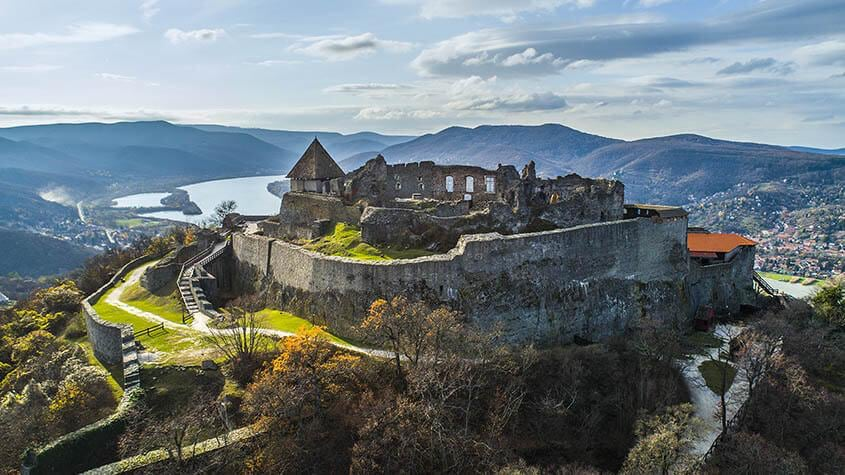
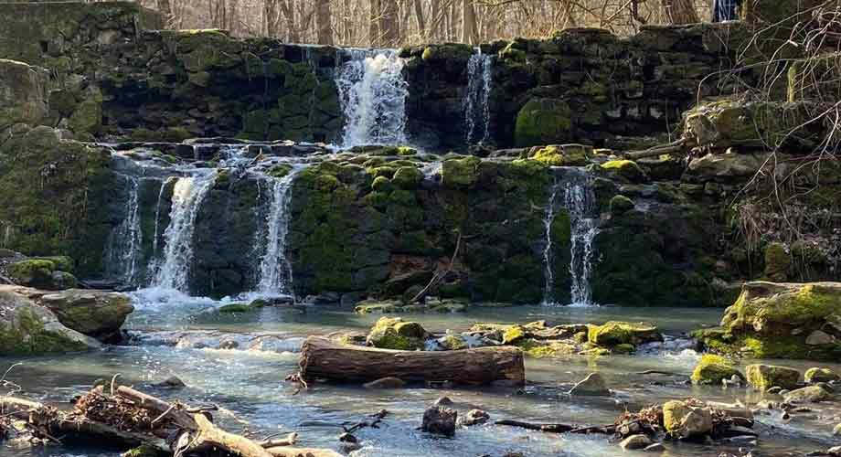
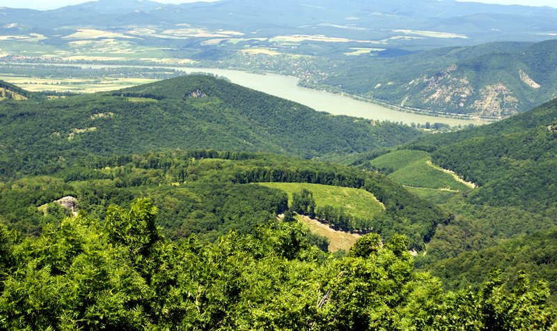

A Visegrádi vár

Visegrád talán legemblematikusabb építménye, melyre a köznyelv többnyire csak visegrádi várként utal,
ezzel is kiemelve a Várhegy tetején magasodó, tiszteletet parancsoló épületegyüttes kulturális
jelentőségét. Valójában a Várhegy tövében található Salamon-torony is része az egységnek, mint
Alsóvár.
Mai állapotában már kell hozzá némi képzelőerő, hogy a két különálló látványosságként megszokott és
külön is emlegetett építményt összekössük.
Ehhez nyújt egy kis segítséget a rekonstruált alaprajz.
Évről évre több tízezren látogatnak el a város legmagasabb pontján fekvő Fellegvárba, melynek
teraszáról rendkívüli panoráma nyílik a Dunakanyarra, s mely több, elsősorban a középkorról szóló
izgalmas kiállításnak is otthont.
Mégis, amiről a legtöbben ismerik és amiért igazán szeretik a Fellegvárat a Visegrádra látogatók, az
a panoráma odafentről.
A hegytetőről a városra és a Dunakanyarra letekintve olyan látvány tárul eléd, melyet egész biztosan
nem felejtesz el soha.
Lajos-forrás

A pilisi kirándulások egyik csomópontja, kedvelt kiindulópontja és pihenőhelye a Szentendréhez
tartozó Lajosforrás. Találunk itt iható vízű forrást, piknikezésre kitűnő rétet és egy felújításra
váró turistaházat.
Az 587 méter magas Bölcső-hegy oldalában számos forrás fakad, közülük a legbővebb vízhozamú (kb. 18
l/perc) és egyben a legismertebb a Lajos-forrás.
Szentendrére Belgrád 1521-es eleste óta több hullámban érkeztek szerb menekültek, 1695-től pedig itt
volt a Budai Szerb Ortodox Püspökség központja. Szinte egyedülálló módon Szentendrén a 18. században
szabadon gyakorolhatták vallásukat a szerb ortodoxok, pedig ez máshol csak a katolikusokat illette
meg. Ők "Dobrá voda", vagyis Jóvíz néven emlegetették a forrást a nyelvükön. Ez az elnevezés máig
megmaradt a földrajzi nevekben: környékbeli dűlő, major is viselte, de a forrás táplálta patakot
máig Jóvíznek hívják.
Dobogókő

Dobogókő a Visegrádi-hegység legmagasabb csúcsa, tengerszint feletti magassága 700 méter. A hely
a
19. század végén vált népszerű úticéllá, amikor a Magyar Turista Egyesület elkezdte a környék
bejárását és a túraútvonalak
kijelölését. Az egyesület célul tűzte ki a túrázás magyarországi népszerűsítését. Azért
esett
Dobogókőre a választásuk, mert a változatos erdei utak mellett gyönyörű panoráma tárul a
kirándulók
elé minden évszakban, továbbá a kirándulóhely Budapestről egyszerűen és gyorsan megközelíthető.
Dobogókőn épült az ország egyik első menedékháza, a Báró Eötvös Loránd Menedékház, amelyet
1898-ban adtak át. A menedékház faépületében ma a Turistamúzeum működik, míg a
mellette 1906-ban felépült kőépület ma is turistaházként szolgál.
Dobogókőn minden évszakban pár fokkal hűvösebb van, mint a magyarországi átlag hőmérséklet, így
a klíma nyáron roppant kellemes, télen pedig gyakran megmarad a hó, amely alkalmas téli
sportokhoz.